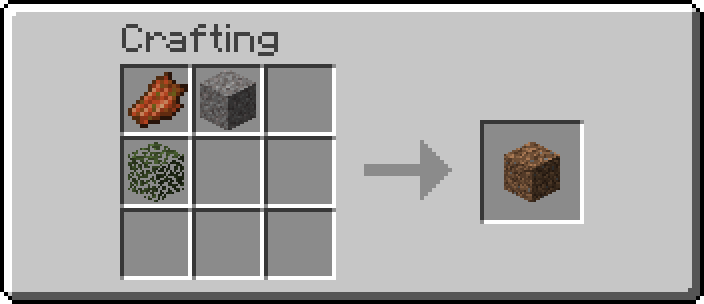
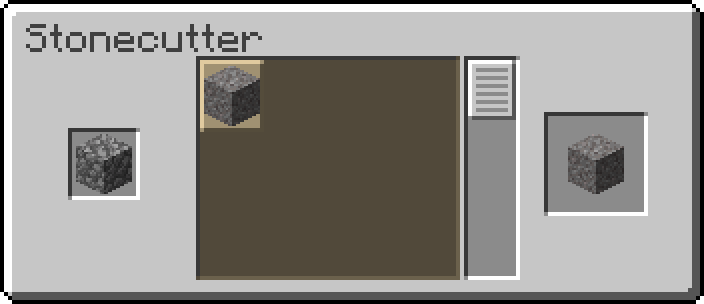
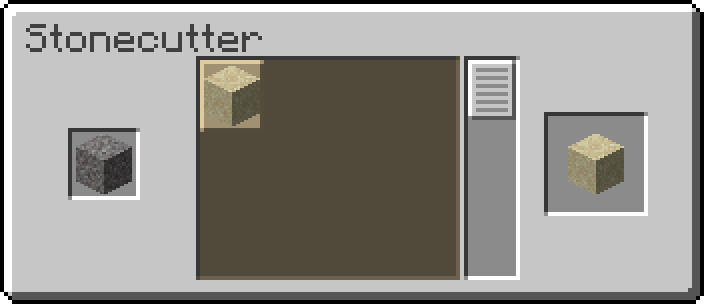
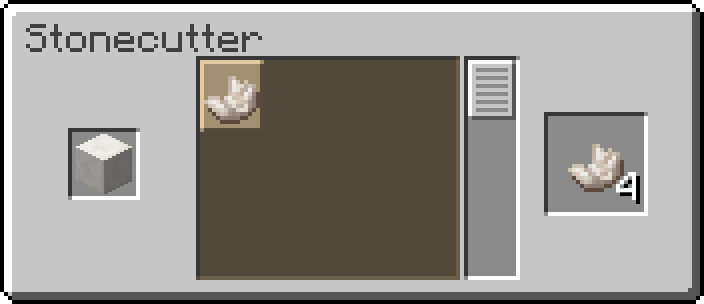
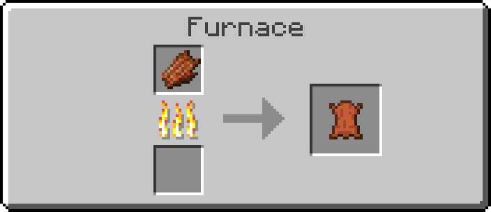
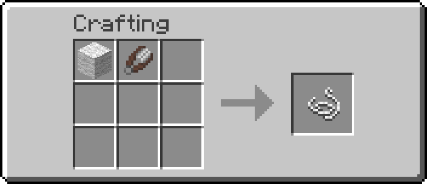

Blocks
| Name | Ingredients | Input » Output | Description |
|---|---|---|---|
| Dirt Block | Leaves + Rotten Flesh + Gravel |  |
Dirt is a common natural block found across most biomes in the Overworld but maybe you need even more Dirt |
| Gravel | Cobblestone |  |
Gravel is a gravity affected block that drops flint and generates widely underground, underwater and in the Nether, wonderful for paths |
| Sand | Gravel |  |
Sand is also a gravity affected block primarly used for building, landscaping and an essential crafting material. |
Items
| Quartz | Quartz Block |  |
Quartz is an essential material for redstone items like, observers, comparators... |
|---|---|---|---|
| Leather | Rotten Flesh |  |
Leather is a common crafting material used to make armor, books, bundles and item frames. |
| String | Wool |  |
Quartz is an essential material for redstone items like, observers, comparators... |